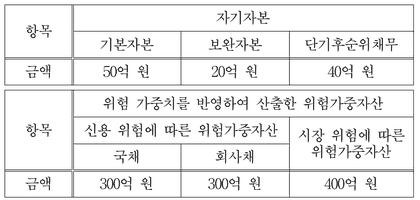

BIS 비율
지문을 먼저 읽고, 이해가 막히는 문단에서 ‘그림으로 보기’를 누르세요. 그림은 문단을 따라 바뀝니다.
1문단국제법에서 일반적으로 조약은 국가나 국제기구들이 그들 사이에 지켜야 할 구체적인 권리와 의무를 명시적으로 합의하여 창출하는 규범이며, 국제 관습법은 조약 체결과 관계없이 국제 사회 일반이 받아들여 지키고 있는 보편적인 규범이다. 반면에 경제 관련 국제기구에서 어떤 결정을 하였을 경우, 이 결정 사항 자체는 권고적 효력만 있을 뿐 법적 구속력은 없는 것이 일반적이다. 그런데 국제결제은행 산하의 바젤위원회가 결정한 BIS 비율 규제와 같은 것들이 비회원의 국가에서도 엄격히 준수되는 모습을 종종 보게 된다. 이처럼 일종의 규범적 성격이 나타나는 현실을 어떻게 이해할지에 대한 논의가 있다. 이는 위반에 대한 제재를 통해 국제법의 효력을 확보하는 데 주안점을 두는 일반적 경향을 되돌아보게 한다. 곧 신뢰가 형성하는 구속력에 주목하는 것이다.
2문단BIS 비율은 은행의 재무 건전성을 유지하는 데 필요한 최소한의 자기자본 비율을 설정하여 궁극적으로 예금자와 금융 시스템을 보호하기 위해 바젤위원회에서 도입한 것이다. 바젤위원회에서는 BIS 비율이 적어도 규제 비율인 8%는 되어야 한다는 기준을 제시하였다. 이에 대한 식은 다음과 같다. BIS 비율(%)=자기자본/위험가중자산×100≥8(%) 여기서 자기자본은 은행의 기본자본, 보완자본 및 단기후순위채무의 합으로, 위험가중자산은 보유 자산에 각 자산의 신용 위험에 대한 위험 가중치를 곱한 값들의 합으로 구하였다. 위험 가중치는 자산 유형별 신용 위험을 반영하는 것인데, OECD 국가의 국채는 0%, 회사채는 100%가 획일적으로 부여되었다. 이후 금융 자산의 가격 변동에 따른 시장 위험도 반영해야 한다는 요구가 커지자, 바젤위원회는 위험가중자산을 신용 위험에 따른 부분과 시장 위험에 따른 부분의 합으로 새로 정의하여 BIS 비율을 산출하도록 하였다. 신용 위험의 경우와 달리 시장 위험의 측정 방식은 감독 기관의 승인하에 은행의 선택에 따라 사용할 수 있게 하여 ‘바젤I’ 협약이 1996년에 완성되었다.
3문단금융 혁신의 진전으로 ‘바젤I’ 협약의 한계가 드러나자 2004년에 ‘바젤II’ 협약이 도입되었다. 여기에서 BIS 비율의 위험가중자산은 신용 위험에 대한 위험 가중치에 자산의 유형과 신용도를 모두 ⓐ고려하도록 수정되었다. 신용 위험의 측정 방식은 표준 모형이나 내부 모형 가운데 하나를 은행이 이용할 수 있게 되었다. 표준 모형에서는 OECD 국가의 국채는 0%에서 150%까지, 회사채는 20%에서 150%까지 위험 가중치를 구분하여 신용도가 높을수록 낮게 부과한다. 예를 들어 실제 보유한 회사채가 100억 원인데 신용 위험 가중치가 20%라면 위험가중자산에서 그 회사채는 20억 원으로 계산된다. 내부 모형은 은행이 선택한 위험 측정 방식을 감독 기관의 승인하에 그 은행이 사용할 수 있도록 하는 것이다. 또한 감독 기관은 필요시 위험가중자산에 대한 자기자본의 최저 비율이 ⓑ규제 비율을 초과하도록 자국 은행에 요구할 수 있게 함으로써 자기자본의 경직된 기준을 보완하고자 했다.
4문단최근에는 ‘바젤III’ 협약이 발표되면서 자기자본에서 단기후순위채무가 제외되었다. 또한 위험가중자산에 대한 기본자본의 비율이 최소 6%가 되게 보완하여 자기자본의 손실 복원력을 강화하였다. 이처럼 새롭게 발표되는 바젤 협약은 이전 협약에 들어 있는 관련 기준을 개정하는 효과가 있다.
5문단바젤 협약은 우리나라를 비롯한 수많은 국가에서 채택하여 제도화하고 있다. 현재 바젤위원회에는 28개국의 금융 당국들이 회원으로 가입되어 있으며, 우리 금융 당국은 2009년에 가입하였다. 하지만 우리나라는 가입하기 훨씬 전부터 BIS 비율을 도입하여 시행하였으며, 현행 법제에도 이것이 반영되어 있다. 바젤 기준을 따름으로써 은행이 믿을 만하다는 징표를 국제 금융 시장에 보여 주어야 했던 것이다. 재무 건전성을 의심받는 은행은 국제 금융 시장에 자리를 잡지 못하거나, 심하면 아예 ⓒ발을 들이지 못할 수도 있다.
6문단바젤위원회에서는 은행 감독 기준을 협의하여 제정한다. 그 헌장에서는 회원들에게 바젤 기준을 자국에 도입할 의무를 부과한다. 하지만 바젤위원회가 초국가적 감독 권한이 없으며 그의 결정도 ⓓ법적 구속력이 없다는 것 또한 밝히고 있다. 바젤 기준은 100개가 넘는 국가가 채택하여 따른다. 이는 국제기구의 결정에 형식적으로 구속을 받지 않는 국가에서까지 자발적으로 받아들여 시행하고 있다는 것인데, 이런 현실을 ㉠말랑말랑한 법(soft law)의 모습이라 설명하기도 한다. 이때 조약이나 국제 관습법은 그에 대비하여 딱딱한 법(hard law)이라 부르게 된다. 바젤 기준도 장래에 ⓔ딱딱하게 응고될지 모른다.
윗글을 참고할 때, <보기>에 대한 반응으로 적절하지 않은 것은? [3점]
갑 은행이 어느 해 말에 발표한 자기자본 및 위험가중자산은 아래 표와 같다. 갑 은행은 OECD 국가의 국채와 회사채만을 자산으로 보유했으며, 바젤Ⅱ 협약의 표준 모형에 따라 BIS 비율을 산출하여 공시하였다. 이때 회사채에 반영된 위험 가중치는 50%이다. 그 이외의 자본 및 자산은 모두 무시한다.

표: 자기자본은 기본자본 50억 원, 보완자본 20억 원, 단기후순위채무 40억 원. 위험가중자산은 국채 300억 원, 회사채 300억 원, 시장 위험에 따른 위험가중자산 400억 원">